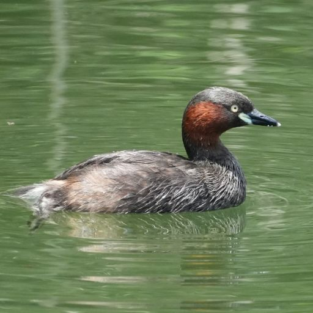

Bucerotiformes
Coraciiformes
Piciformes
| ダチョウ目 Struthioniformes |
ヒクイドリ目 Casuariiformes |
レア目 Rheiformes |
| カモ目 Anseriformes |
キジ目 Galliformes |
|  | |
| フラミンゴ目 Phoenicopteriformes |
カイツブリ目 Podicipediformes |
| ハト目 Columbiformes |
| エボシドリ目 Musophagiformes |
| ツル目 Gruiformes |
チドリ目 Charadriiformes |
| ヨタカ目 Caprimulgiformes |
| ペンギン目 Sphenisciformes |
コウノトリ目 Ciconiiformes |
カツオドリ目 Suliformes |
ペリカン目 Pelecaniformes |
| フクロウ目 Strigiformes |
| コンドル目 Cathartiformes |
タカ目 Accipitriformes |
| サイチョウ目 Bucerotiformes |
ブッポウソウ目 Coraciiformes |
キツツキ目 Piciformes |
| ハヤブサ目 Falconiformes |
| スズメ目 Passeriformes |